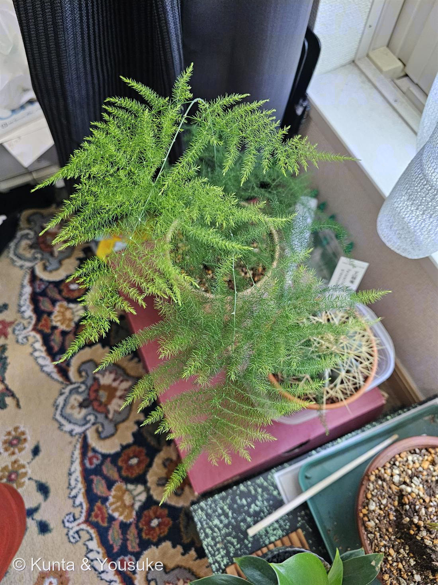

地図を読み込んでいるよ…
🔍 写真も地図も、押しているあいだ拡大して見られるよ（スマホは指を置いてすこし待ってね）。
🌍 の地図＝この子がもともと自生している場所を緑に。南部アフリカ（南西はカルー地方のカリツドルプあたりまで）。
⚠出典は「南部アフリカ」までしか言っていない（南西はカルー地方のカリツドルプあたりまで、とある）ので、地図は南アフリカ共和国だけを塗った。
⚠ 地図は国（日本と中国だけ県・省）までしか塗れないから、ほんとうの分布より広く見えていることがあるよ。地図はだいたいの場所。正確なところは、上の文を見てね。
アスパラガス・セタセウス
Asparagus setaceus (Kunth) Jessop
別名 · アスパラガス・ファーン／レースファーン／プルモーサス
キジカクシ科 · Asparagaceae（クサスギカズラ属）
おうちの植物世話：陽介おうちの植物シリーズ
名前と学名の由来
- Asparagus（アスパラガス）＝食用アスパラガスと同じ属名。ギリシャ語 asparagos（新芽・若い茎）に由来するといわれる。
- setaceus（セタケウス）＝ラテン語で「剛毛のある・糸状の」。細い糸のような葉状の枝（仮葉）にちなむ。
この植物のこと
- キジカクシ科クサスギカズラ属の観葉植物。「アスパラガス・ファーン」と呼ばれるが、シダ（fern）ではない。単子葉植物で、胞子でなく花・種子でふえる。
- ふわふわの緑の“葉”に見える部分は、実は葉ではなく枝が葉のようになったもの＝仮葉（cladode／葉状枝）。本当の葉は目立たない小さなうろこ状に退化している。← 観察のいちばんのポイント。
- 食用アスパラガスと同じ属の仲間（別種）。若い芽は、あの食べるアスパラそっくりの形でニョキッと伸びる。
- 明るい間接光を好み、乾燥には弱め（湿度と水を好む）。よく茂ると小さな白い花や赤い実（有毒）をつけることも。根（貯蔵根）が太く鉢いっぱいになりやすい。くわしい水やり等は下の「育て方のポイント」を。
- ※観葉アスパラガスには、セタセウス（繊細なレース状）・スプレンゲリー（垂れる・葉が太め）・フォックステール（穂状）などがあり紛らわしい。この株は細くレース状の枝ぶりからセタセウスと見られる。
- ⭐その「紛らわしいスプレンゲリー」が、図鑑に来た——No.037 アスパラガス・スプレンゲリー（A. densiflorus 'Sprengeri'）。並べて見ると、ちがいがはっきりする：この008は仮葉が糸のように細く、水平に羽状に広がる（＝レース状の平面）。037は仮葉が幅広く扁平で、節ごとに放射状に束生する（＝ふさふさの立体）。同じ属、同じ「仮葉」の手品を使う兄弟。